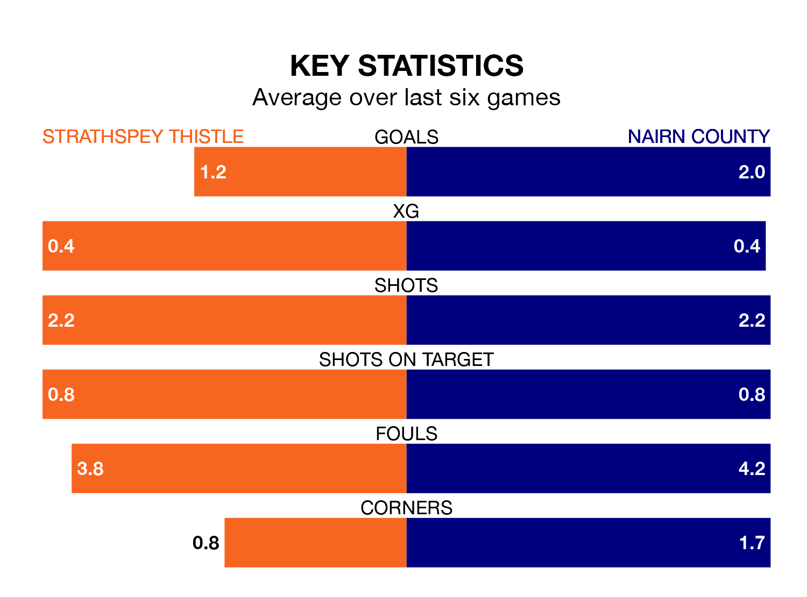

Strathspey Thistle host Nairn County in Saturday's early match at Seafield Park looking to bounce back from defeat last time out in Highland and Lowland Football Leagues.
Strathspey Thistle, who sit zero in the league after 17 games, fell to a 1-0 home defeat to Formartine United on December 16.
They face a Nairn side who also lost their last match, a 1-0 defeat to Brechin City, and who sit 12th in the table.
With 18 goals in 17 games so far this season, Strathspey Thistle are the league's-14th-lowest scorers with 1.1 goals per game. And they are conceding more than average, letting in 62 goals at a rate of 3.6 per game.
Nairn, meanwhile, are above average scorers, with 1.9 goals per game, compared to a league average of 1.8. They have conceded 1.5 goals per game.
The hosts are in bad form in Highland and Lowland Football Leagues, with one win and five losses from their last six games.
With four wins and a draw over that period, County's form is much better – they have taken 13 points from 18, compared to Strathspey Thistle's three.
In the last five years, Strathspey Thistle and Nairn have played each other on six occasions. Nairn won all of them.
On average, Strathspey Thistle scored 0.7 goals and Nairn 3.2 in those matches.
Their last meeting was on September 2, when Nairn won 4-1 at home.
Updated: 15:34, 08/01/24